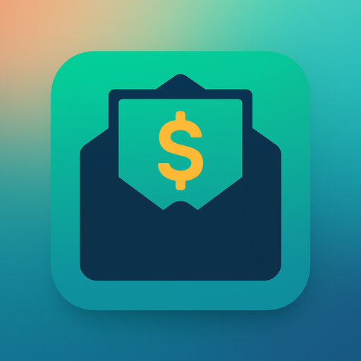
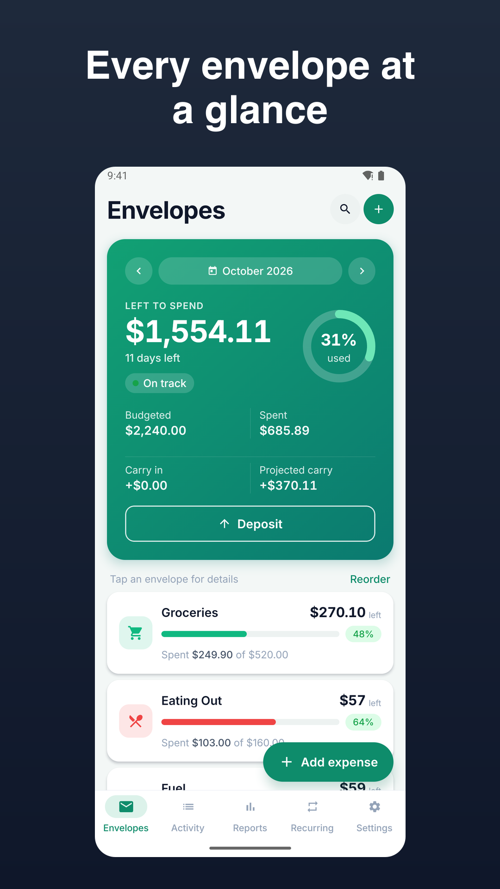
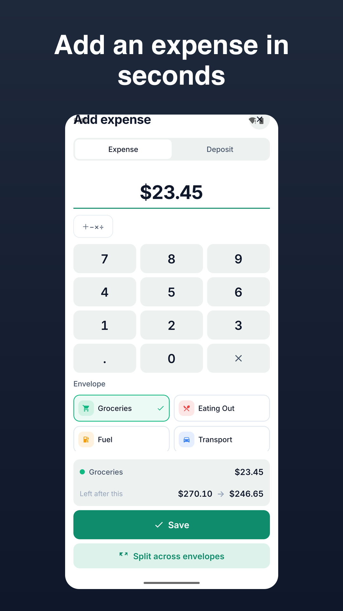
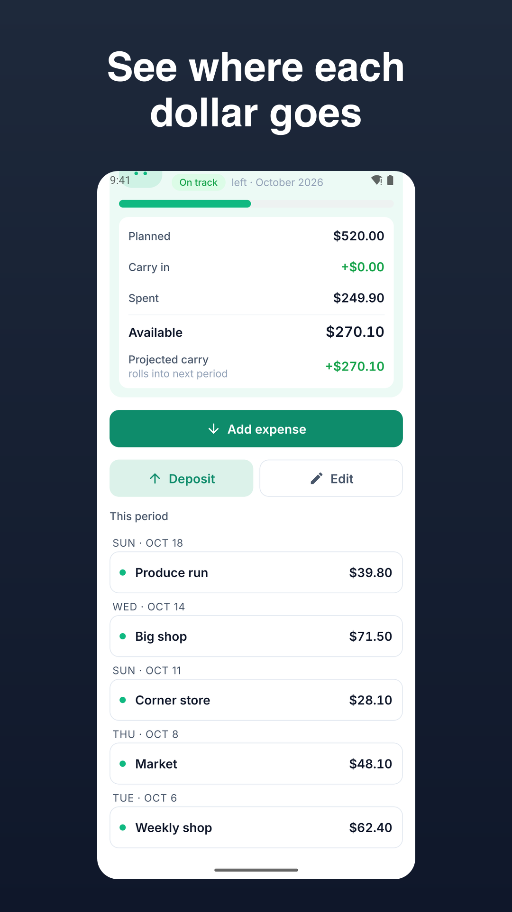
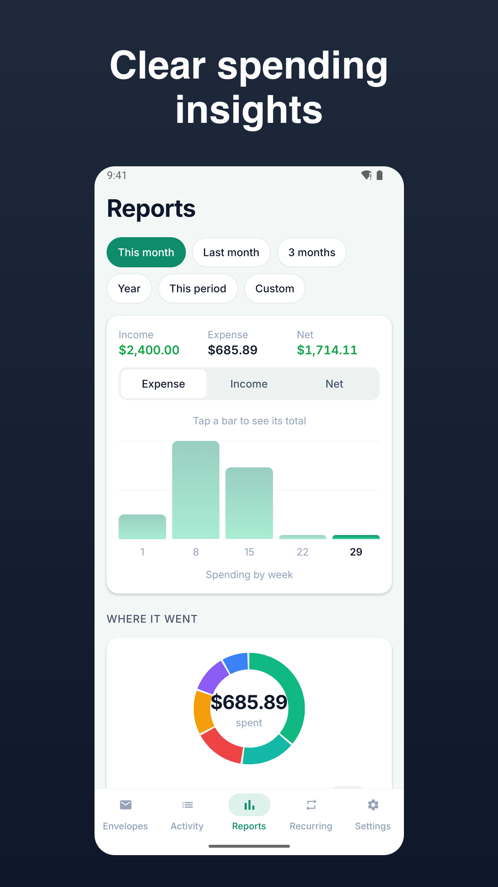
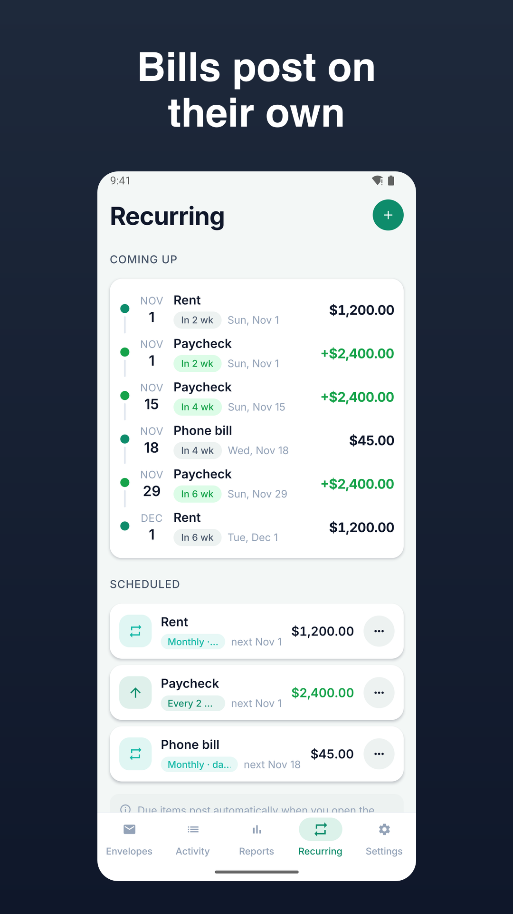
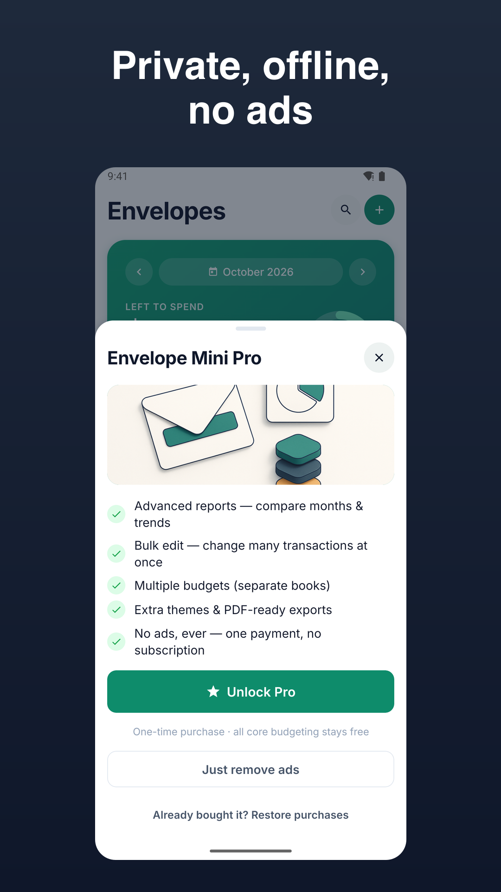

Envelope Mini - Budget Planner
Fast envelope budget app and manual budget tracker. Private, offline.






Envelope Mini is a budget planner free app built for speed, privacy, and clarity. It’s an envelope budget app that puts you in control with quick manual entry, reliable rollover math, and no bank linking.
Why Envelope Mini
- Open → tap an envelope → add expense or deposit → done. Manual budget tracker flow in under three taps with an inline calculator.
- Clear envelope bars show allocated, spent, and remaining at a glance. Rollover per category is rock‑solid and visible.
- Works fully offline. No account required. Your data stays on the device. Export anytime via CSV/XLSX or PDF (Pro).
Core job, done simply
- Envelope list with one‑tap + Expense / + Deposit per envelope
- Inline calculator supporting +, −, ×, ÷, and %
- Custom envelopes and optional sub‑envelopes with icons and colors
- Multiple accounts (cash, debit, credit) and true transfers that never double‑count
- Recurring transactions with flexible schedules and edit scopes (this, this+future, all)
- Rollover budgets per envelope with clear carry‑in and carry‑out
- Paycheck‑cycle budgeting (monthly or custom, including biweekly)
- Charts for cash flow and category spend with custom date ranges and drill‑down
- Undo/redo and per‑transaction edit history for confidence
- Security lock with PIN and biometric unlock
- CSV/XLSX import and export with a forgiving mapping wizard (local only)
- Local notifications for due bills, end‑of‑period review, and gentle logging nudges
- Quick duplicate and quick split for fast, accurate entry
- Labels/tags and filters for focused reports
- Themes and dark mode with accessible contrast
Private by default
- Works offline, no signup
- Data lives on your device
- Exports you control (CSV/XLSX, and PDF in Pro)
What’s free
- All core budgeting: envelopes, rollover, paycheck cycles
- Recurring engine with calendar preview and edit scopes
- Multiple accounts and transfers
- Charts with custom ranges and drill‑down
- CSV/XLSX import/export (local)
- Security lock, themes (light/dark), labels, quick split/duplicate
- Local notifications and reminders
Go Pro (one‑time unlock)
- Advanced reports (multi‑month compare, envelope drill exports)
- Bulk edit operations for faster cleanup
- PDF exports for budgets and reports
- Multiple books (separate budgets)
- Advanced themes
Designed for speed
- Add expenses in seconds from the envelope list
- Smart defaults remember your last account and method
- Snappy performance even with large histories
Made for manual budgeters
- If you prefer an envelope budget app without bank linking, this manual budget tracker keeps things trustworthy and fast. Envelope budgeting stays clear with explicit math and dependable rollover.
Get started
- Create sample envelopes or start from scratch, set your amounts, and log your first expense in under a minute. Keep control of your money with a budget planner free app that respects your time and privacy.
Note: Cloud sync is optional and not required. Data is stored on your device, and any sync uses encryption in transit and at rest.
Support: jeets98e@gmail.com